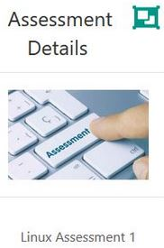

Shell Scripting Assessment Guidelines
Shell Scripting Assessment Guidelines
Assessment Guide Video also available under the previous Assessment Details area
**PLEASE NOTE: There is now a linked guide video underneath that will complement the Assessment Details file**- The following labs go through some exercises for you to try out that may be useful for your Shell Scripting Assessment
Assessment Due Date
- to be uploaded to Moodle on or before 11:55pm Sunday 18th November (week 9)What to Upload?
(1) COMPRESSED FILE
- you are required to compress all of your files for upload to the associated Moodle upload area
(2) VIDEO
The purpose of this video is for you to do a full run through each of the files in your Assessment and describing them using voice only.
- You should demonstrate the files using a screencasting software of your choice that allows you to record your screen plus voice audio.
(e.g.'s Kazam, SimpleScreenRecorder, Vokoscreen)
- You should describing/defend your choices/approaches (using your machines standard mic for your voice is sufficient).
- There is no particular time constraints on this video, it will most likely be <10 minutes, sufficient time to allow you to describe your Assessment components.
- You may choose to upload the video or Moodle or ideally upload a link to where you've hosted it.Shell Scripting Assessment Notes
- In your Assessment Details, you can read that the Menu is to be the entry point of your project.

- Menu, file #1, will allow the user to read a command line menu and from this, a user can select from any of the options presented and be brought to the appropriate script.

So, if the user enters 1 then send them to the ./AddCust
This should be file #2 that you will have created which will automatically create a file called CustomerDetails, if it doesn't already exist... you might consider using re-direction in your command
CustomerDetails is therefore file #3 that the script will create at the beginning to enter the first record
If the user enters 2 then send them to the ./RemCust (so this is file #4 that you will have created)
If the user enters 3 then send them to the ./FindCust (so this is file #5 that you will have created)
Finally a user will be allowed to email customer(s) and you can choose how you would like to approach this... see the next lab
All menu options should loop until a user chooses to exit
Linux Mail Component
- There is a primitive mailer on Linux that is relatively easy to use from the command line.
- You check for mail by just typing:
mail- You send mail by typing
mail joe@bloggs.com -s "Message for Joe"You then type your mail and end it by typing CTRL+D on a line of its own
You’ll need to install mailutils first if not already installed:
sudo apt-get install mailutils
(choose local only option)This facility means that you will be only allowed send test emails and not emails via the internet so this is perfectly OK. An email will not actually be sent out. You can test that the email was sent via your mail command This is sufficient for the purpose of this assessment i.e. if you tested sending an email to your own email myemail@gmail.com, it is OK that you will not see this email in your own gmail account.
You might consider setting a variable to be equal to a find (recall grep) of the appropriate person in a particular file where the records are stored to begin with... what next?? Maybe pipe the output to an awk command? Why?
You might consider something like this to email the person with a particular message:
echo $message | mail -s $subject $emailaddressThis is only one of MANY approaches that you might have taken to searching for a particular person/group you want to send an email to and then emailing them... what I'm looking for is your command of the language